scroll down to view this case study
CARA
For my final year project I am building a protoype for an AI chatbot that promotes the daily management of ones mental health.

For my final year project I am building a protoype for an AI chatbot that promotes the daily management of ones mental health.
scroll down to view this case study
This case study looks at my final year project throughout the year and the processes involved to get it from start to finish.
The idea from the get go was to try build a tool that could aid the young people of Ireland with tracking and improving their own mental health.
I firstly had to try and gain an insight from my users and discover what were the problems my target audience were facing every day.
I conducted my initial research though an online survey and interviews along with user personas.
For my quantitative part of my research I decided in order to gather as much information as possible the best option would be to
send out a survey to as many people as I could. I decided to put out a survey that would help give an insight in how young people
of Ireland go about managing their own mental health and the attitudes they have towards it.. It consisted of 18 questions varying
from yes/no to rating an answer on a scale and opened ended questions.
For this project I will be interviewed individuals aged 18 to 25 around the Limerick area. I will be used the short interviews
to gain insights on the internal struggles young people in Ireland suffer from to help create a product to aid improve such struggle.
The most common mental health issues that are showing up are stress, anxiety and depression.
I used personas to help bring together information about groups of users or a set of users. The idea was to have a persona represent
a certain group of users and their needs, frustrations and goals. These can help any designer come up with solutions to issues
a group of users might be facing.
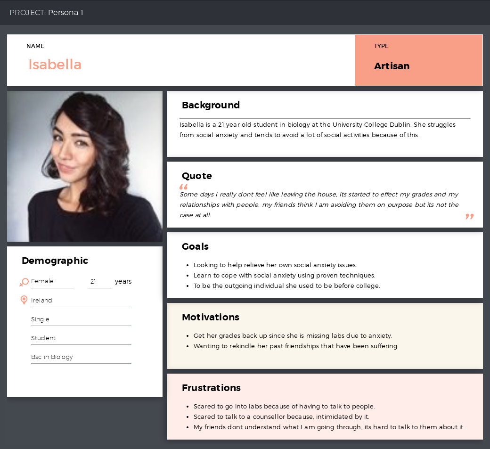
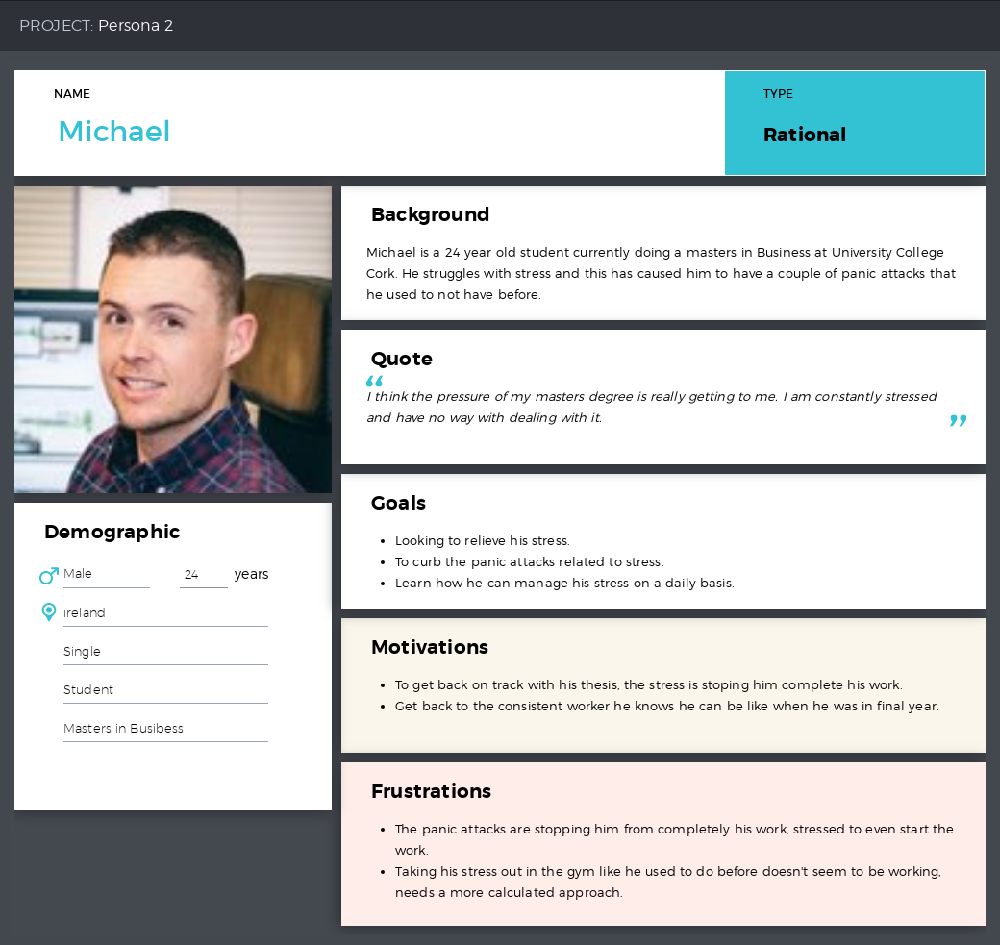
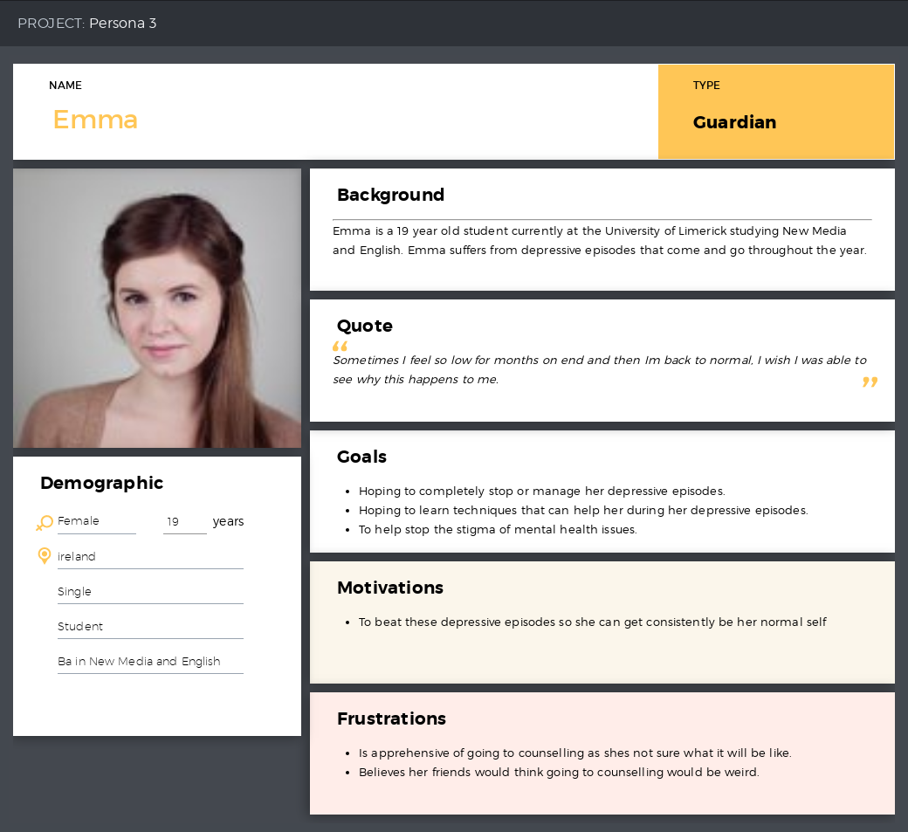
Following my research I analysed all of my data and moved onto the design phase. Here I used a few different techniques based on the
data I gathered to brainstorm potential solutions to the users problems.
The first session I used the How Might we Technique to help me generate realistic ideas that could be part of my end product. The four key areas
I focused on were depression, anxiety, stress and destigmatization. I started off with being as broad as possible with how might we solve ‘x’ problem.
Moving into either a very narrow or unrealistic idea to finally a realistic idea. These phases of the ideation process helped me to think up of as many
possibilities to solving the users problems and pain points. I can then pick and choose ideas from each post it to come up with the final solution
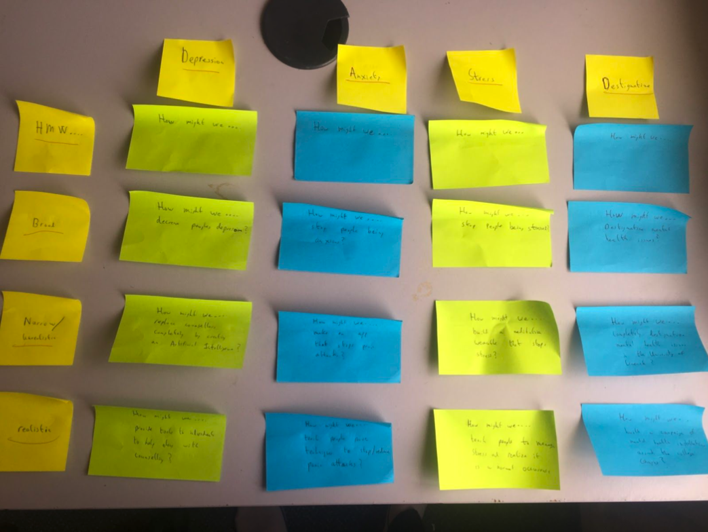
By this stage I am starting to narrow in on some potential areas to go towards. There are topics that start to come up time and time again.
Using the user stories technique I try to get into the mind of the potential user and to see where they are coming from and what exact ideas could be used with job stories
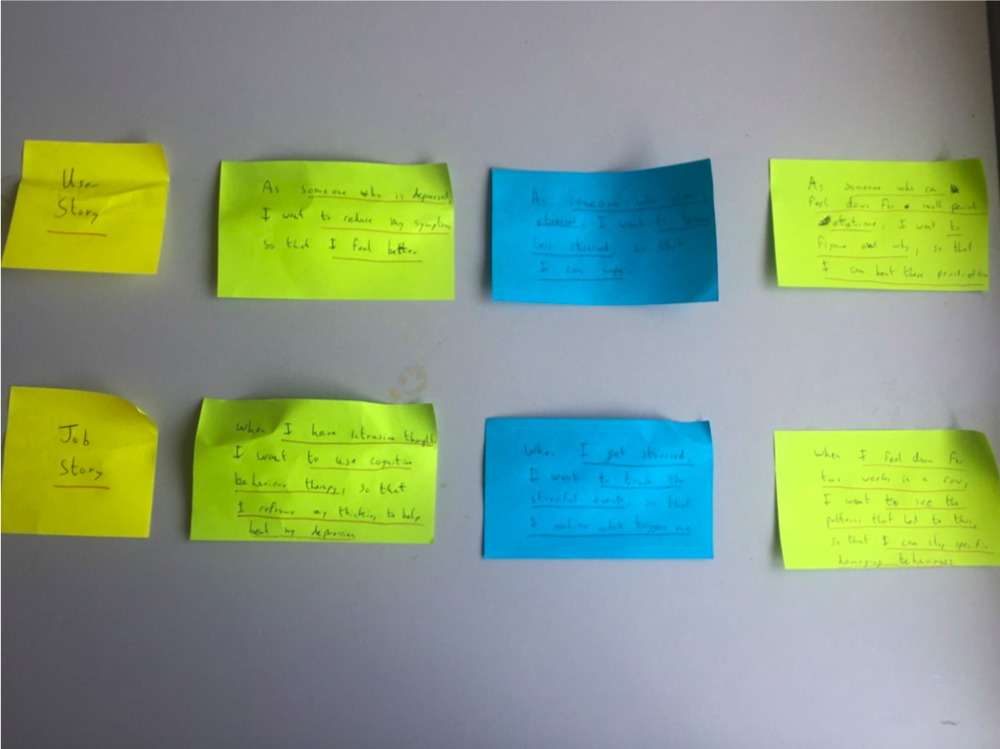
Following my brainstorms and Ideation I start to narrow into the ideas I want to work on. The one standing out to me most is the artificial intelligence chatbot.
I believed this would be the most beneficial to the users in solving their problems. The artificial intelligence chatbot would be broad enough to help the three main
mental health issues that keep cropping from my user research up with depression, anxiety and stress.
The basic premise of the artificial intelligence chatbot would be that it would allow the user to chat to the AI about managing their mental health on an ongoing basis and
learn how to cope with clinically proven techniques. The three main techniques are the burns depression checklist used to quantify the users levels of depression and track it,
a stress journal to identify your stressors everyday and finally CBT to help provide a therapy to teach the user to rejig their harmful thoughts.
Once a certain amount of data is gathered the artificial intelligence could anaylze the data and give feedback and pointers
After nailing down the core features of the app I went to the design phases which I would test with users. Starting with low fidelity paper sketches, mid fidelity wireframes
and finally the full prototype built through adobe XD
For my final year project I am building a protoype for an AI chatbot that promotes the daily management of ones mental health.
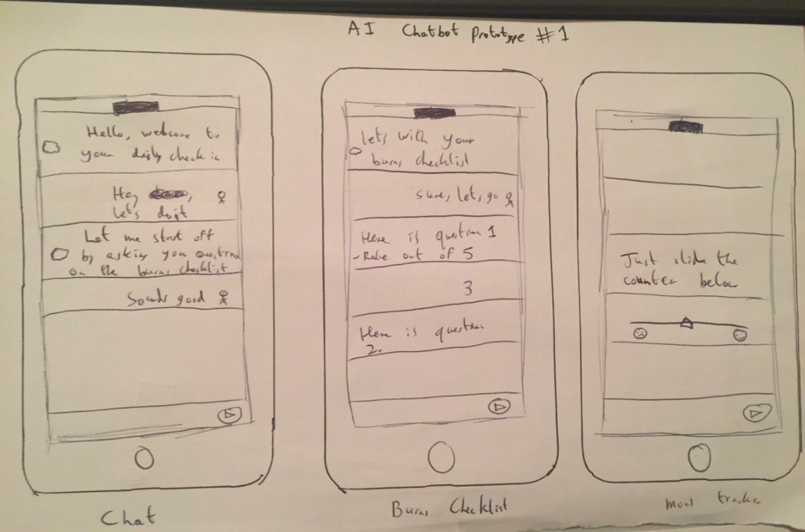
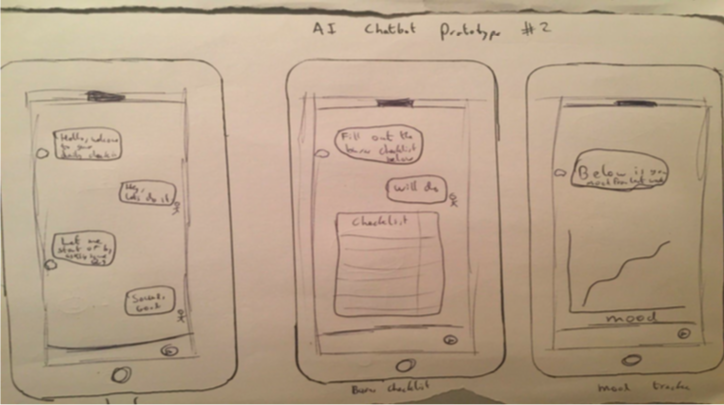
For my final year project I am building a protoype for an AI chatbot that promotes the daily management of ones mental health.
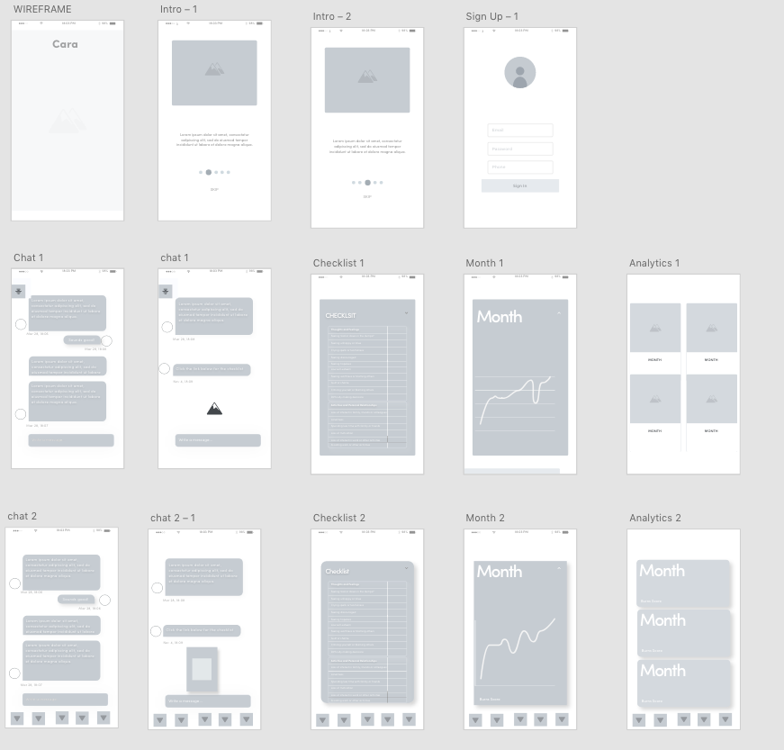
For my final year project I am building a protoype for an AI chatbot that promotes the daily management of ones mental health.
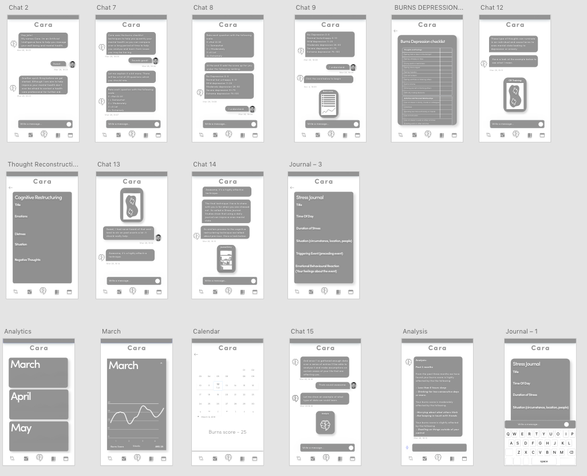
Having conducted usability testing through out with hallway testing, the five second test and interviews I moved onto my final round of usability
testing. I interviewed ten participants aged between 18 to 26 with a 50/50 gender split. After the analysis the main take aways can be seen below
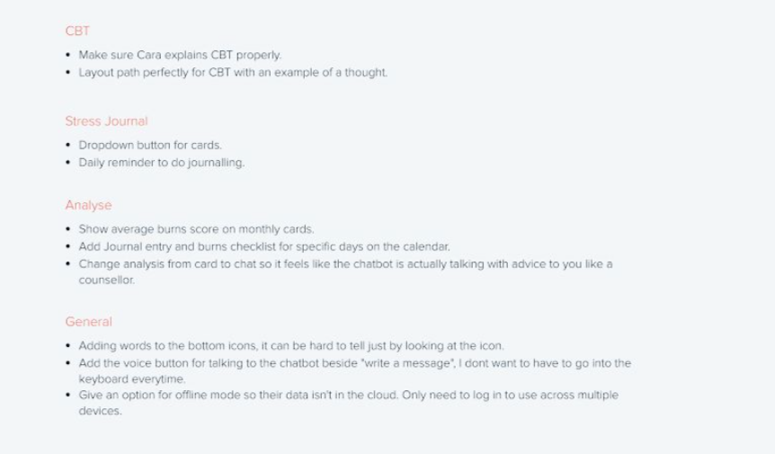
I then implemented these into the final design.
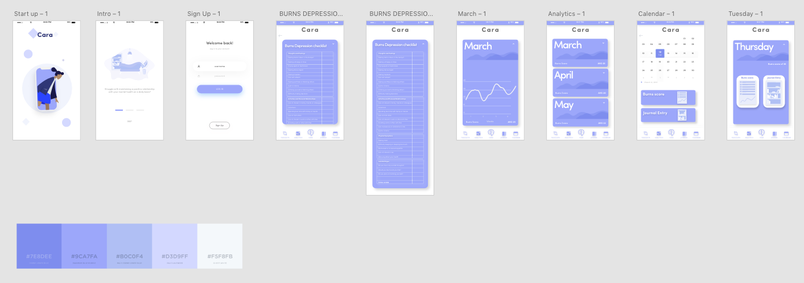
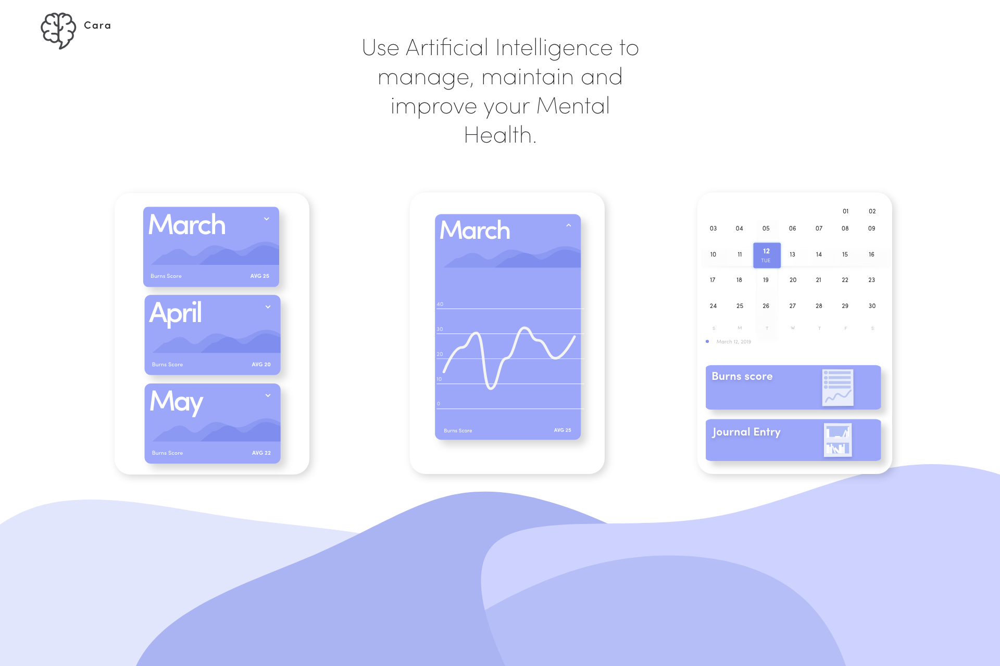
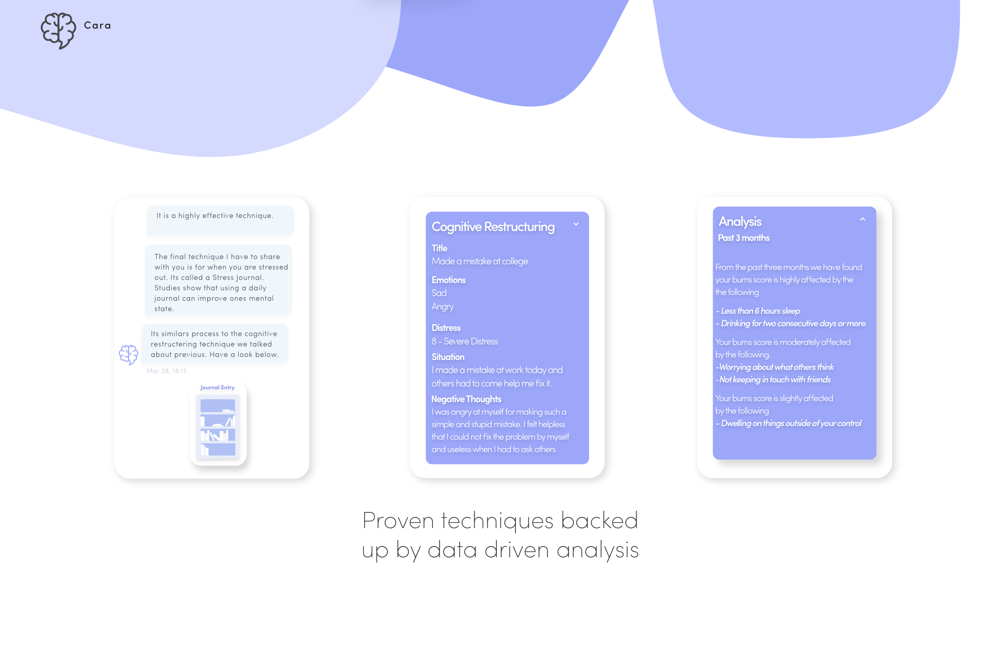
The final prototype of my final year project can be found here to use. It shows you a complete run through of how the app would work if it was fully functional.
TRY THE PROTOYPE